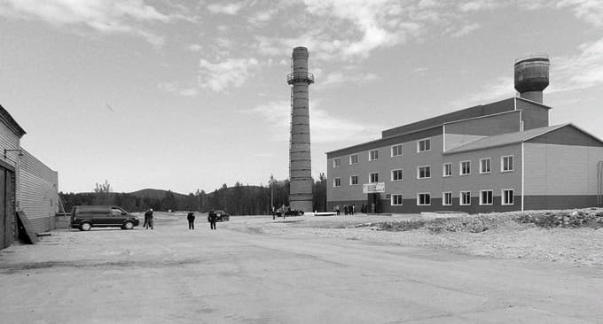

С 1966 года мы добываем и перерабатываем природный жильный кварц, постоянно совершенствуя процесс добычи и переработки кварцевого сырья. Высокочистые кварцевые концентраты, которые мы выпускаем, применяются для производства широкого спектра инновационной продукции — от элементов полупроводниковой электроники и деталей медицинской аппаратуры до фотоэлектрических преобразователей — солнечных батарей.
Наша миссия — обеспечение потребностей инновационных отраслей промышленности в кварцевых концентратах высокой чистоты.
Получение высокотехнологичного продукта необходимой заказчикам чистоты достигается за счет инвестиций в научно-конструкторские разработки (что подтверждается целым рядом собственных патентов) и непрерывной модернизацией производства.
Особенность нашего продукта, в основном использующегося для производства оптики, во многом определяется уникальными свойствами кварцевого месторождения — жилы №175.